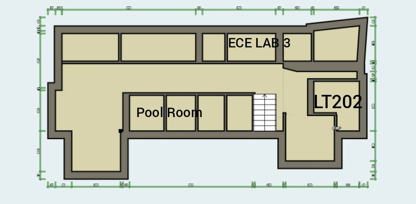

HEY! You got stuck?
We are here to hold your back.
Our website is splited in two part, Outdoor Navigation and Indoor Navigation
The Indoor Navigation helps user to navigate indoor and know the place well
As you come to indoor navigation page you are given 2 choices, whether to do a tour or simple navigation
The Tour will help you to navigate and also understand the surroundings well
where in Navigation the user can directly navigate from one place to another
In the case of Indoor Tour, the user needs to turn on his bluetooth, and then click on Click here to scan Bluetooth device.
Please connect to the device LT202 for the first time as you entered Academic block 2
You get redirected to the page and now you can navigate and get information.
The page also tells us about which next slide you should connect to,
for eg while reading about about LT201 you can see the information tell which device to be connected next
After navigating and knowing the area you have to press Ok to go back and connect to new device
This is the map for floor 0 of Academic Block 2
